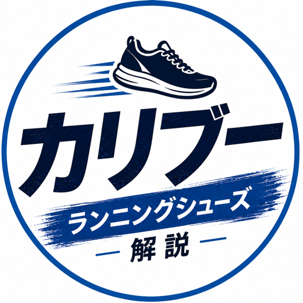

RUNNING SHOE-TUBER KARIBU
走ることを、もっと好きに。もっと長く続けて欲しい。
今日もナイスラン！
ランニングシューチューバーのカリブーです。ランニングやマラソンに役立つ情報を、研究データとシューズの実測で、初心者にもわかりやすく届けています。皆さんが少しでも走ることを好きになって、長く続けてくれたら嬉しいです。
チャンネル登録者
公開した動画
実測したシューズ

まず見てほしい動画
すべての動画 →新しい動画
動画一覧 →動画を出している理由
皆さんが少しでも走ることを好きになって、長く続けてくれること。すべての動画は、そのために作っています。
役立つ情報を、わかりやすく
練習法やレースの走り方を、研究データをもとに、初心者にもわかる言葉で解説します。
楽に、長く走れるように
楽に走るコツ、怪我の予防、日々のケア。無理なく続けるための話を大切にしています。
自分に合う1足を
シューズは重さ・かたさ・反発を同じ条件で実測。実際に走った感覚もあわせて伝えます。
SNS・チャンネル
YouTubeのほか、InstagramとTikTokでも実測の様子やまとめ画像を出しています。